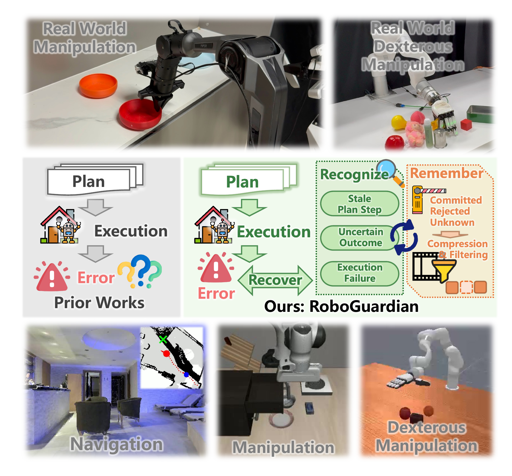
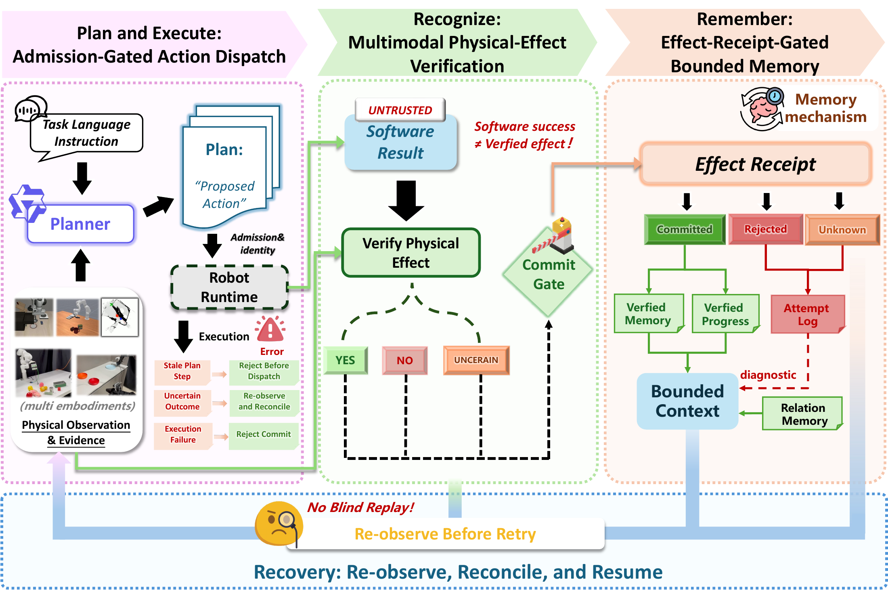
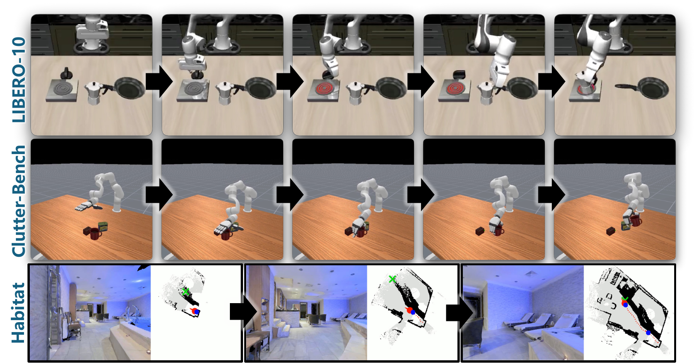
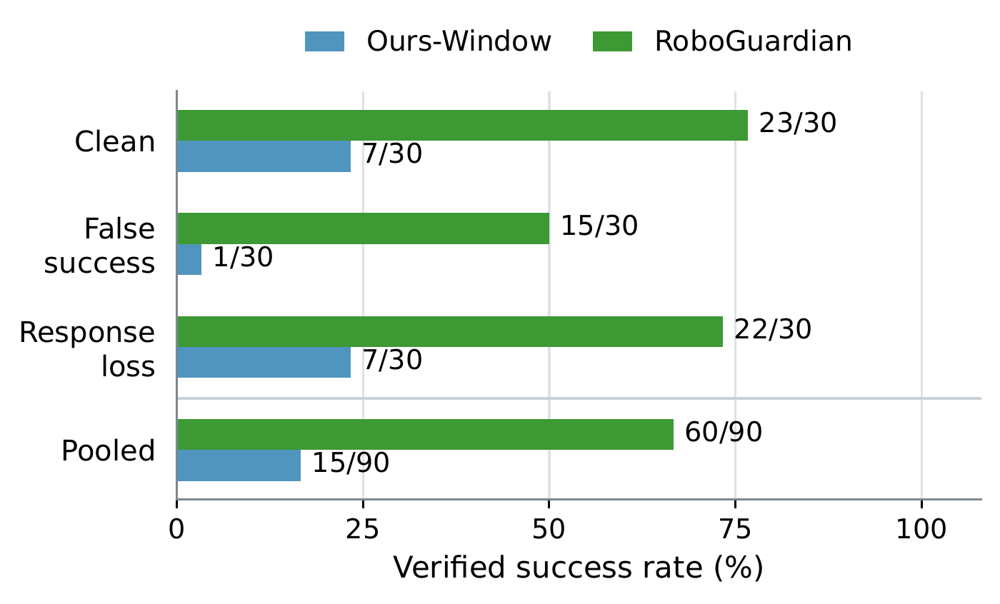
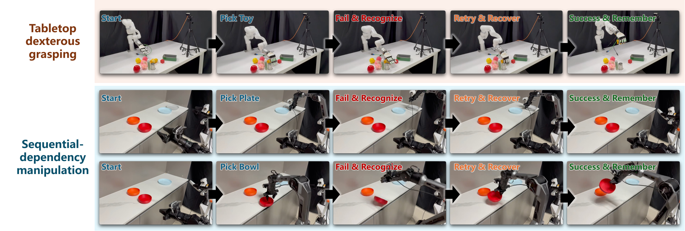

Abstract
Embodied-agent harnesses connect high-level planners to low-level execution policies and use execution results to update task state and memory. However, current harness mechanisms often fail to verify physical state changes reliably. This limitation applies to both low-level execution feedback and VLM-based evaluations. Unverified outcomes may therefore enter memory and mislead subsequent actions.
We present RoboGuardian, a fault-aware execution and memory-maintenance framework for embodied-agent harnesses. It organizes execution exceptions into three response-oriented categories: outdated plan steps, uncertain outcomes, and execution failures. RoboGuardian checks plan validity and entity identity before execution and combines semantic, proprioceptive, and effect-level evidence to produce a three-way physical-effect judgment. Only physically confirmed actions update its embodied memory and progress. It maintains a bounded trusted context and re-observes before retrying unresolved actions, preventing blind retry and replay.
We evaluate the framework on LIBERO-10, Clutter-Bench, and vision-language navigation in Habitat, and demonstrate its behavior on dual-arm and dexterous-hand manipulation platforms. The evaluations examine execution reliability, receipt-gated memory, and context cost at the integration granularity supported by each platform.
From execution to verified progress
A skill can report success while the intended physical effect never happens.
RoboGuardian checks the evidence before that result becomes a trusted fact.

How RoboGuardian works
Plan and execute. Recognize. Remember. Recover.

Plan & execute
Check plan validity, skill applicability, and entity identity before dispatch.
Recognize
Combine available semantic, proprioceptive, and effect-level evidence into yes, no, or uncertain.
Remember
Admit only committed effects to verified memory and progress, then build a bounded planning context.
Recover
Replan outdated steps, recover from rejected effects, and re-observe unresolved outcomes before retrying.
Experiments in simulation
From low-level actions to high-level skills and navigation episodes.

Action-level verification on LIBERO-10
A frozen SmolVLA policy is evaluated over 600 episodes: 10 tasks × 10 initial states × 3 conditions × 2 variants. Both variants use the same policy reinference frequency.
| Condition | Variant | TSR ↑ | VSR ↑ | Actions ↓ | Wall time (s) ↓ |
|---|---|---|---|---|---|
| Clean | Base | 0.43 | 0.43 | 418.6 | 358.4 |
| RoboGuardian | 0.42 | 0.42 | 395.7 | 349.2 | |
| Outdated chunk | Base | 0.41 | 0.20 | 426.8 | 367.0 |
| RoboGuardian | 0.41 | 0.41 | 378.5 | 338.9 | |
| Timeout / retry | Base | 0.42 | 0.22 | 420.4 | 374.3 |
| RoboGuardian | 0.39 | 0.39 | 387.8 | 354.9 |
TSR is the native task success rate. VSR counts successful episodes whose execution chain has no outdated plan-step dispatch, duplicate dispatch, or unresolved outcome. Actions and wall time are per-episode means.
Under outdated chunks, both variants reach the same task success rate, but RoboGuardian verifies all 41 successes. Under timeout / retry faults, it produces no duplicate actions or unverified writes while abstaining when evidence remains unresolved.
Skill-level verification on Clutter-Bench
Seven object categories, three clutter levels, and 63 paired scenes per condition. The planner and high-level push, pull, and grasp skills are shared between variants.
| Condition | Base TSR ↑ | Ours TSR ↑ | Base VSR ↑ | Ours VSR ↑ |
|---|---|---|---|---|
| Clean | 0.857 | 0.905 | 0.825 | 0.857 |
| False success | 0.476 | 0.889 | 0.460 | 0.889 |
| Response loss | 0.841 | 0.889 | 0.825 | 0.873 |
| Pooled | 0.725 | 0.894 | 0.704 | 0.873 |
“Ours” denotes RoboGuardian. Pooled values summarize all 189 scenes per variant and are descriptive.
Across these conditions, unverified memory writes fall from 170 to 0. Under response loss, duplicate physical actions fall from 32 to 0 through re-observation before another action is issued.
Remember confirmed progress
A three-image recency window can discard established progress. Receipt-gated memory preserves verified effects in a compact planning context.
In the separate memory ablation, verified successes increase from 15/90 to 60/90 with receipt-gated memory. Mean skill dispatches fall from 51.6 to 35.0.
In the main Clutter-Bench evaluation, RoboGuardian bounds each model request to 5 images, compared with a peak of 53 for Base. Peak request size falls from 21.29 MB to 2.05 MB.
The ablation uses 30 paired scenes per condition. Its results are separate from the 63-scene main evaluation.

Verification on physical robots
Qualitative demonstrations on a dexterous hand and a dual-arm manipulator.

Dexterous grasping
A grasp reports success although the object is not retained. RoboGuardian rejects the effect, keeps the failed attempt out of trusted memory, and re-observes before a later grasp is verified.
Sequential manipulation
On the dual-arm platform, the next skill depends on retaining an earlier object. RoboGuardian blocks a dependent step when that prerequisite fails and rejects final completion if the retained object later slips.
These demonstrations illustrate verification and memory maintenance on physical hardware. Their reliability depends on the available perception and robot evidence.
BibTeX
Manuscript citation. Publication details will be updated when available.
@misc{gao2026roboguardian,
title = {RoboGuardian: Fault-Aware Execution and Memory
Maintenance for Embodied Agent Harness Frameworks},
author = {Gao, Zijie and Li, Chenxu and Chen, Zixuan and
Xu, Jiapeng and Zhang, Wenquan and Zhu, Yizhou and
Zheng, Rongjin and Wang, Xinke and Shi, Jieqi and
Huo, Jing and Gao, Yang},
year = {2026},
note = {Manuscript}
}